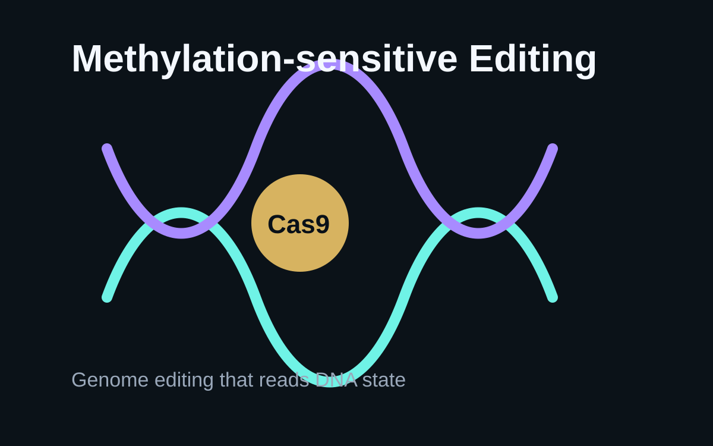
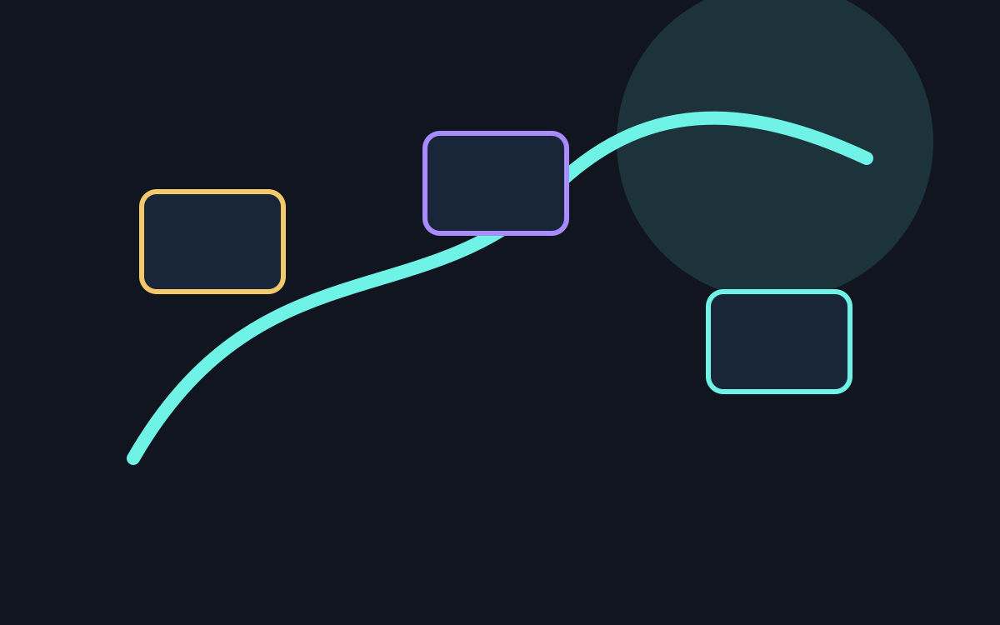

生物・進化
ゲノム、進化、生態、動物、植物、微生物の論文を読みます。

メチル化を読むCas9という発想 生物・進化の記事一覧Hotarun Journal
Nature、Science、Cell系の新着論文を、生物、医学、宇宙、AI、心理、古生物などのジャンルに分けて整理する科学ブログです。
Genres
ゲノム、進化、生態、動物、植物、微生物の論文を読みます。

メチル化を読むCas9という発想 生物・進化の記事一覧疾患、臨床研究、創薬、神経科学、健康科学の論文を読みます。

AIは薬を必要な場所へ届けられるか 医学・健康の記事一覧宇宙、惑星、気候、地球科学、環境研究を読みます。
冬の雨と雪は、温暖化でどう変わるのか 宇宙・地球の記事一覧AI、ロボット、材料、量子、計算科学の論文を読みます。
AI創薬・AI生命科学論文の読み方 AI・テクノロジーの記事一覧認知、行動、言語、社会、コミュニケーション研究を読みます。
やさしいAIは、正確さを失うのか 心理・社会の記事一覧化石、古生物、人類史、考古学の論文を読みます。
古代DNAが映す、ローマ辺境の家族史 古生物・考古の記事一覧Articles
古代ゲノムから、帝国崩壊後の人々の移動と家族の連続性を読み解きます。
中緯度の冬季降水を左右する、大気循環の不確実性を整理します。
シエラレオネで実装された、医薬品配分のための意思決定型機械学習を読みます。
温かい返答を学習させた言語モデルで、精度と迎合性がどう変わるかを見ます。
DNAの状態を見分けるゲノム編集酵素ThermoCas9の可能性を整理します。
性能指標、検証データ、実験確認の有無からAI生命科学論文を読みます。
現象、手法、モデル、生物学的意味に分けて読むための型を紹介します。
新規性、データ量、再現性からゲノム研究の読みどころを整理します。
広告：楽天アフィリエイトリンクを含みます。価格や在庫はリンク先でご確認ください。